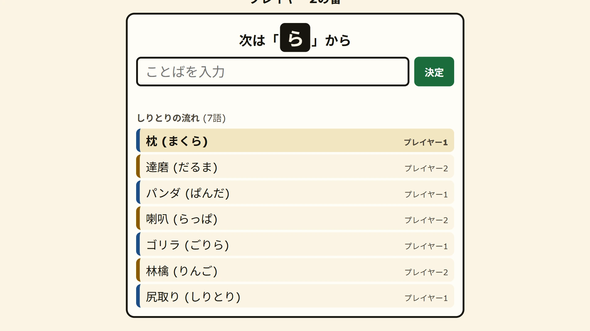

Relaywise — free word chain game online
Start your word where the last one ended. Play the computer at three levels, a friend on the same device, or a friend anywhere with a link, in eight languages.


How to play word chain
Two players take turns saying a word. The first word can be anything. Every word after it must start where the last word ended: in English, with its last letter, so apple is followed by egg, then giraffe, then elephant.
A word must be in the dictionary, and no word may be played twice in a game. If your word is refused, try another. You lose when your time runs out, or when you give up. The opening word must be one that another word can follow.
Word chain in eight languages
The same game has a different name, and a slightly different rule, in every language. Pick the language of the words in the game; it starts on the language of the page.
- Vietnamese, nối từ: two-syllable words; the next word starts with the last syllable, tone mark included (học sinh, sinh viên, viên chức).
- Japanese, shiritori: played on the kana reading; the next word starts with the last sound. A word that ends in ん (n) loses on the spot. Type in kana or kanji.
- Korean, kkeutmal-itgi: the next word starts with the last syllable, with the initial-sound rule (dueum beopchik), so a word ending in 력 may be followed by 역.
- Indonesian, sambung kata: the next word starts with the last two letters (rumah, ahli), or with the last letter if you prefer.
- Spanish, Portuguese, Tagalog and English: the last letter, with accents ignored (canción, nube); the last two letters is the harder option.
Three ways to play
Vs computer has three levels. Easy only knows common words and sometimes runs dry. Medium knows the whole dictionary. Hard picks words that leave you as few answers as possible, and late in a game it plays words that nothing follows.
Two players is one device passed back and forth, with the timer keeping both of you honest.
Friend online opens a room. Send the link, or read out the six-letter code for your friend to type. The host chooses the language and the timer and plays first; each rematch swaps who starts. Nobody needs an account.
The timer
Each turn has 20 seconds by default. You can choose 10, 15 or 30 seconds, or play with no timer at all. The bar under the word turns red for the last five seconds.
Tips for winning
Answer with words that end in a hard letter or syllable: the fewer words start with it, the fewer answers your opponent has. Keep a few long-shot words for late in the game, and watch the chain: a word that has already been played cannot be your way out.
The dictionaries
The word lists are built from Wiktionary, through the wiktextract data published by kaikki.org, and are shared under the same licence, CC BY-SA 4.0. They hold nouns in most languages and two-syllable words in Vietnamese; words that are vulgar or offensive in their main sense are left out.
More word games
For more word games, try Letterloft (a tile word game against the computer or a friend) or Wordburrow (crosswords). For a two-player board game, Gomowise is Gomoku, five in a row.
More like this: 2-player games online · Multiplayer browser games · Free word games